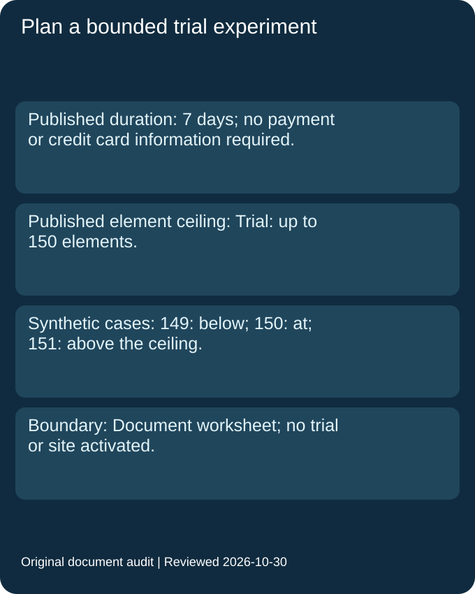
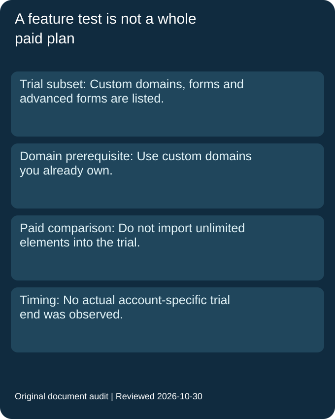

Must I provide a credit card to try Pro?
The official trial documentation says no payment or credit card information is required. This review did not activate the trial.
Official source · Reviewed 2026-10-30
Carrd promo code
Carrd officially offers a free seven-day test drive of a subset of Pro features, with no payment or credit card information required. Its trial documentation caps a site at 150 elements. Use the official trial route; this review verified no reusable public promo-code string.
Read the official trial and start route · Last checked and updated: 2026-10-30T09:00+08:00
| Offer | Conditions and access | Official source | Reviewed |
|---|---|---|---|
| Seven-day Pro trial | The official documentation offers a subset of Pro features free for 7 days, with no payment or credit card information required. Use its official Start Pro Trial link. | Official source | 2026-10-30 |
| Term | Official scope | Official source | Reviewed |
|---|---|---|---|
| Trial element limit | The trial documentation lists up to 150 elements; the paid Pro comparison separately describes unlimited elements. | Official source | 2026-10-30 |
| Included trial capabilities | The trial list includes custom domain URLs, contact/signup forms, advanced forms and widgets, among other listed capabilities. It is a subset, not a blanket promise of every paid feature. | Official source | 2026-10-30 |
| Custom domain condition | Custom Domain URLs supports publishing to custom domains you own, with SSL support. This does not advertise a free domain registration. | Official source | 2026-10-30 |
| Upgrade route | The documentation permits upgrading to a full Pro plan during or after the trial. No upgrade or payment was performed here. | Official source | 2026-10-30 |
| Public code and expiry status | No reusable public code was verified in these official pages. No fixed campaign closing date was established; that does not mean permanent availability. Seven days is the trial duration, not a code expiry. | Official source | 2026-10-30 |
A free trial is useful only if the proposed test fits its documented scope. We turned Carrd's trial feature list into a small planning worksheet, keeping the element count, desired feature and ownership of any custom domain separate. The worksheet evaluates fictional site plans against published documentation. We did not start a trial, create a Carrd site, connect a domain or submit a form.
For a synthetic page plan containing one hundred and forty-nine elements, the count sits below the published trial ceiling. A plan containing one hundred and fifty sits exactly at the ceiling. A plan containing one hundred and fifty-one exceeds it. These are deliberately chosen boundary inputs, not observed sites. The comparison checks only the documented count condition; it says nothing about whether a particular design publishes correctly or meets every other account restriction.
Our worksheet reports a remaining element allowance as the published ceiling minus the proposed count. A negative result means that the proposed experiment needs to be reduced before this limited document check passes. It does not mean Carrd charges for an extra element, and it does not invent an overage price. We keep that planning result out of the offer table because it is our own arithmetic, not a second promotional benefit.
The paid Pro comparison describes an unlimited element allowance, while the trial document supplies a specific limit. Our worksheet attaches the limit to the trial experiment, even when the visitor arrived through a general Pro marketing page. Copying a paid-plan capability into the trial column would approve the over-limit example incorrectly. A test of advanced forms is therefore a test of that included feature within the trial's own boundaries, rather than proof that the entire paid plan is available without limits.
The same separation applies to a custom domain. The trial feature description refers to domains the user already owns. We record domain ownership as a prerequisite field when a proposed experiment needs that feature. An empty ownership field remains unresolved. The worksheet cannot turn a free website-builder trial into a free domain registration, nor does this review establish a registrar purchase or an SSL configuration on a live account.
The trial duration describes how long the documented test drive lasts. It is not a public coupon expiry date. Our preparation sheet keeps a proposed trial start, its eventual account-specific end and the date of our document review in separate fields. We did not activate a trial, so no actual end timestamp exists in this record. A review date cannot fill that gap, and a duration alone does not establish the exact timezone or expiry instant for a user's account.
To reproduce the preparation, list the features needed for a small experiment, count its proposed elements and check the trial document before starting. Record any owned domain separately. After activation, inspect the actual account's trial state rather than using this public worksheet as an entitlement. The output here is a bounded experiment plan with explicitly unresolved fields, not a successful redemption, a publication test or a guarantee of paid-plan features.


Worksheet input sources: Paid Pro comparison and Carrd current promotions, reviewed 2026-10-30.
The official trial documentation says no payment or credit card information is required. This review did not activate the trial.
Official source · Reviewed 2026-10-30
The reviewed trial list specifies up to 150 elements. The paid-plan unlimited description must not replace the trial limit.
Official source · Reviewed 2026-10-30
The official feature wording refers to custom domains you own. The reviewed material does not establish a free domain registration.
Official source · Reviewed 2026-10-30